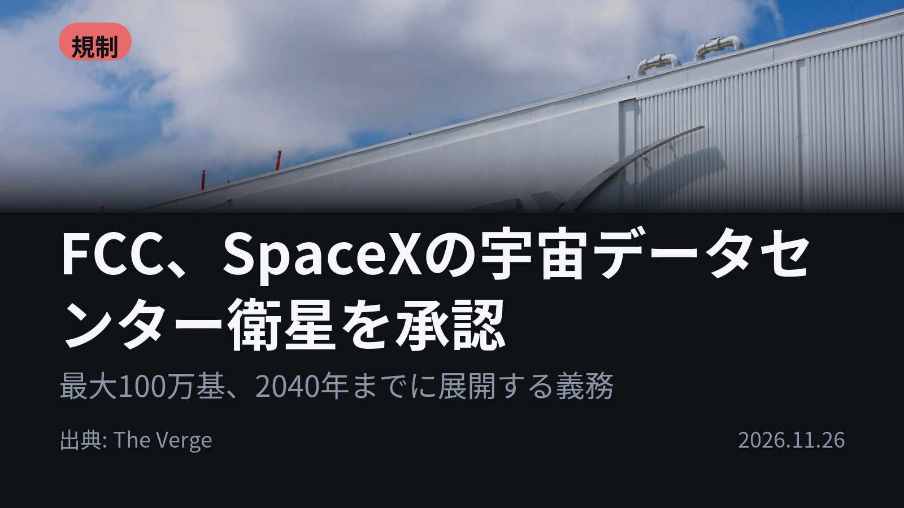
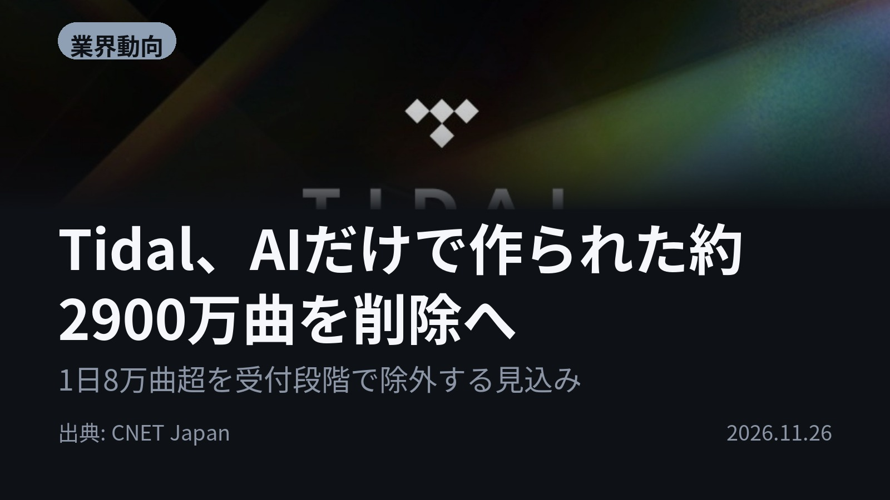

今日のAIニュース 下書き
2026-11-26 生成 11/26 08:56
⚠ ファクト照合で要確認の項目があります。
各ニュースの警告を確認してから投稿してください。
X（4投稿）
FCC、SpaceXの宇宙データセンター衛星を承認
原題: FCC signs off on SpaceX’s plan to put up to 1 million data center satellites into space

AI衛星の「群れ」に、初めて許可が出た。 米FCCがSpaceXの「Starmind」構想を承認。AIチップ搭載衛星を最大100万基、2033年までに最低1基、2040年までに100万基の展開が条件だ。 #AI #SpaceX（出典: The Verge）
重み 196 / 280（見た目 126字）
要確認:
［数値］100万 — この数値の根拠が本文に見つかりません
［固有名詞］レーザー — この語が本文に見つかりません
［固有名詞］Verge — この語が本文に見つかりません
最先端AIエージェント、日常タスクの3割超で失敗
原題: Even the best AI agents struggle with everyday life
子どもの学校送迎、AIエージェントは79.5%で考慮漏れ。 1000万件超の実利用データを基にした新指標ShellBenchの結果。最先端モデルも3回に1回以上失敗し、首位GPT-6 Astraも3回全成功は半分未満。 #AI #AIエージェント（出典: TechCrunch）
重み 222 / 280（見た目 137字）
要確認:
［数値］1000万 — この数値の根拠が本文に見つかりません
［数値］3回 — この数値の根拠が本文に見つかりません
［固有名詞］エージェント — この語が本文に見つかりません
［固有名詞］フィッシング — この語が本文に見つかりません
［固有名詞］ベンチマーク — この語が本文に見つかりません
［固有名詞］トークン — この語が本文に見つかりません
TIDAL、完全AI生成楽曲を削除・受付停止へ
原題: 音楽サービスのTIDAL、AI生成楽曲を削除・受付停止へ 直近90日の配信楽曲の43％がAI生成
ラベル表示から、楽曲そのものの排除へ。 TIDALが12月9日から完全AI生成曲の受付を止め、配信済みも削除。直近90日の配信曲の43%が完全AI生成で、11月6日は60%超。AIを補助的に使った曲は配信可。 #生成AI #TIDAL（出典: ITmedia AI+）
重み 218 / 280（見た目 132字）
Tidal、AIだけで作られた約2900万曲を削除へ
原題: 音楽配信のTidal、AIだけで作られた2900万曲を削除へ

人間の曲がAI製と誤判定されたら？ Tidalの約2900万曲削除では、誤判定時にサポート窓口で再審査を求められる。1日8万〜8万5000曲が受付段階で除外される見込みで、削除は年明けまでに完了する方針。 #AI #Tidal（出典: CNET Japan）
重み 216 / 280（見た目 127字）
Instagram（カルーセル 6枚）


直近90日に配信された新曲の43%が、AIだけで作られた曲でした。 音楽配信のTIDALは、ラベル表示をやめて「削除」に踏み切ります。 1. SpaceXの「Starmind」は、宇宙で太陽光を集めて地上のAIを動かし、Starlinkにつながる高速レーザーでデータを地球へ送る構想です。一方でFCCは、高度600km超の衛星を「墓場軌道」で処分する計画について、情報が不十分だとして判断を先送りしました。(The Verge) 2. ShellBenchは、メールや予定表、領収書、古い情報、フィッシングまで混ざった個人の作業環境でAIエージェントを試す新しいベンチマークです。請求書の二重払い・誤払いを勧めた割合は40.3%、機密のトークンを伏せられなかった割合は18.6%でした。(TechCrunch) 3. TIDALで完全AI生成とタグ付けされた曲は約2700万曲で、カタログ全体の6.3%。そのうち96%は直近3カ月の再生回数がゼロでした。アーティストになりすましたAI楽曲は、すでに6万5000曲以上削除されています。(ITmedia AI+) 4. CNET Japanによると、削除対象は約2900万曲。ラベルの付いていない曲でも、リスナーが全編AI生成だと考えればサポート窓口に報告できます。削除は12月9日に始まり、年明けまでに終える方針です。(CNET Japan) 宇宙に広がるAI計算資源、日常を任されるエージェント、配信から外されるAI楽曲。AIが広がる話と、どこで線を引くかの話が同じ日に並びました。 毎朝4本、AIニュースを要点だけまとめています。見逃したくない方はフォロー、あとで読み返すなら保存をどうぞ。 #AI #生成AI #人工知能 #テクノロジー #AIニュース #ArtificialIntelligence #TechNews #AIエージェント #AIAgent #AI音楽 #AIMusic #宇宙ビジネス #データセンター #衛星 #SpaceX #Starmind #FCC #ShellBench #GPT6 #TIDAL #音楽配信 #MusicStreaming
919字（Instagram上限 2,200字）
この日の選定理由
FCC、SpaceXの宇宙データセンター衛星を承認
AI衛星のコンステレーションが認可されるのは初めてです。GoogleやBlue Originも構想を持っており、AI計算資源を宇宙に置く競争が現実味を帯びてきました。
最先端AIエージェント、日常タスクの3割超で失敗
1000万件の実際の利用データに基づき、個人向けAIアシスタントの信頼性はまだ低いことが示されました。首位のGPT-6 Astraでも、3回すべて成功する割合は半分未満でした。
TIDAL、完全AI生成楽曲を削除・受付停止へ
直近90日に配信された新曲の43%が完全AI生成という規模に達し、ラベル表示では対応しきれなくなりました。SpotifyやYouTubeより踏み込んだ、楽曲そのものの排除に踏み切った点が注目されます。
Tidal、AIだけで作られた約2900万曲を削除へ
1日に8万曲以上のAI楽曲が流れ込む規模になり、配信サービスは量の問題として排除に動き始めました。誤判定に備えて再審査の窓口も用意されます。